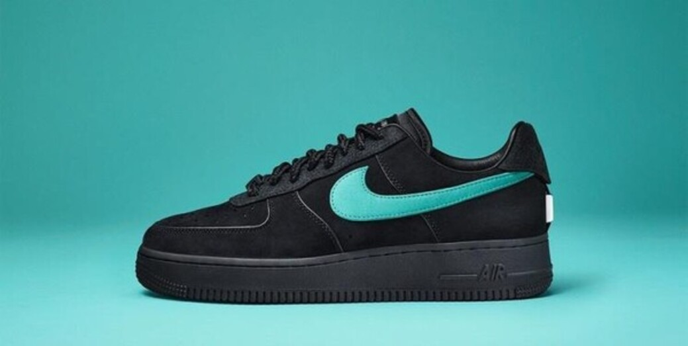

NIKE
나이키는 다양한 스포츠 의류, 신발, 액세서리, 장비 등을 제공하는 종합 스포츠 브랜드로 알려져 있다. 회사의 슬로건인 "Just Do It"은 많은 사람들에게 의욕과 열정을 불어넣으며, 더 나은 성과를 이루기 위해 도전하라는 메시지를 전달한다.
위에 사진은 티파니엔코와 나이키 에어포스 1 로우와 콜라보한 제품이다. 응모로만 구매할 수 있었고 현재 가격은 리셀 기준 140만원대 이다. 현재 내가 가장 갖고 싶은 신발이다.
나이키는 다양한 스포츠 의류, 신발, 액세서리, 장비 등을 제공하는 종합 스포츠 브랜드로 알려져 있다. 회사의 슬로건인 "Just Do It"은 많은 사람들에게 의욕과 열정을 불어넣으며, 더 나은 성과를 이루기 위해 도전하라는 메시지를 전달한다.
위에 사진은 티파니엔코와 나이키 에어포스 1 로우와 콜라보한 제품이다. 응모로만 구매할 수 있었고 현재 가격은 리셀 기준 140만원대 이다. 현재 내가 가장 갖고 싶은 신발이다.